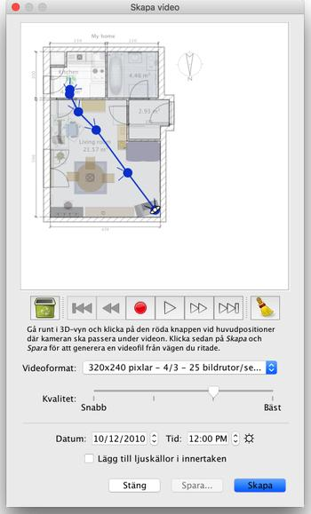

| Skapa video | |||
För att skapa en 3D-video av ditt hem väljer du menyalternativet 3D-vy > Skapa video... eller klickar på Skapa video-verktyget.
Då visas en dialogruta liknande den för att skapa bilder.  Högst upp i detta fönster visas planlösningen för ditt hem där den virtuella rörelsevägen till videokamera kommer att ritas upp. Nedanför planlösningen finns knappar för inspelning, uppspelning och borttagning av punkter som kameran kommer passera. Du kan spela upp den inspelade vägen eller ta bort några av punkterna. För att skapa en video väljer du den inledande platsen för videokamera i 3D-vyn i Sweet Home 3D-huvudfönstret, och klickar sedan på den röda knappen i dialogrutan. Flytta sedan till nästa plats för videokameran i 3D-vyn och klicka igen på den röda knappen. Upprepa stegen för varje plats du vill att kameran ska passera under videoinspelningen.
|
|